Boston University
B.S. in Computer Engineering | Concentrations in Robotics and Machine Learning
Expected May 2027 - Boston, MA, USA
Expected May 2027
Boston, MA, USA
Computer Engineering student at Boston University
I am a Computer Engineering student at Boston University with concentrations in Robotics and Machine Learning.
My research has progressed from medical and soft robotic systems to autonomous robot intelligence, with a consistent focus on modeling, understanding, and controlling complex physical systems. I have worked on robotic medical devices, machine learning for biomedical applications, high-fidelity soft-robot simulation, and autonomous perception, planning, and navigation.
My current research focuses on GPU-accelerated simulation and control for tendon-driven robotic systems, combining physically grounded modeling with scalable methods for robotic learning and real-world deployment.
B.S. in Computer Engineering | Concentrations in Robotics and Machine Learning
Expected May 2027 - Boston, MA, USA
Expected May 2027
Boston, MA, USA
Visiting Undergraduate Researcher - Carnegie Mellon University
May 2026 - Aug 2026 - Pittsburgh, PA
May 2026 - Aug 2026
Pittsburgh, PA
Visiting Undergraduate Researcher - Seoul National University
Apr 2025 - Aug 2025 - Seoul, Korea
Apr 2025 - Aug 2025
Seoul, Korea
Visiting Undergraduate Researcher - Seoul National University
May 2023 - Nov 2023 - Seoul, Korea
May 2023 - Nov 2023
Seoul, Korea
Undergraduate Researcher - Boston University
Mar 2023 - May 2023 - Boston, MA
Mar 2023 - May 2023
Boston, MA
Undergraduate Researcher - Boston University
Jan 2022 - May 2023 - Boston, MA
Jan 2022 - May 2023
Boston, MA
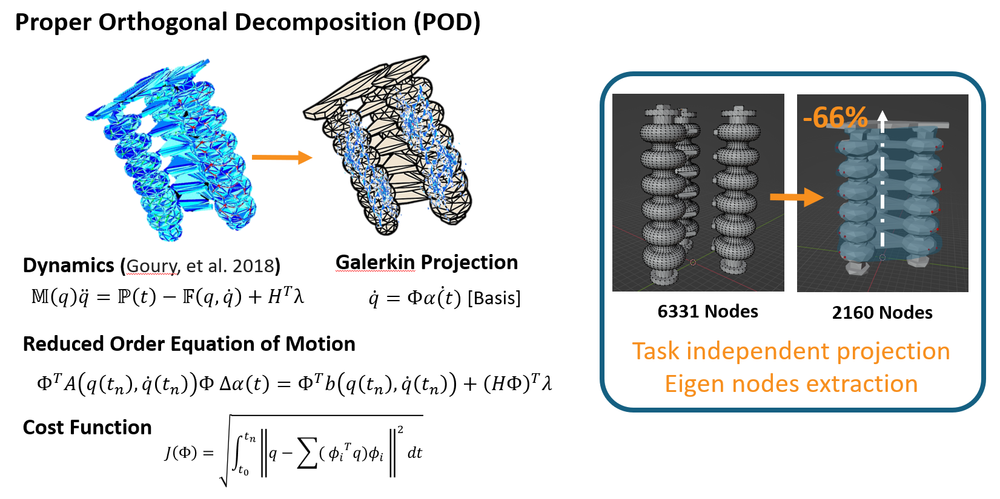
T. Hong, J. Lee, B. Song, and Y.-L. Park.
Advanced Intelligent Systems, 2025. Published. DOI: 10.1002/aisy.202500696.
The paper connects high-fidelity simulation and physics-based learning through a surrogate model for soft robot control.

L. Kinnicutt, L. T. Gaeta, J. Rogatinsky, J. Lee, A. Cameron, A. Naik, D. Hess, and T. Ranzani.
Device, Volume 2, Issue 10, 2024. Published.
The paper presents a modular soft robotic laparoscopic grasper designed for atraumatic small-intestine retraction.
L. Kinnicutt, J. Lee, J. Oden, L. T. Gaeta, S. K. Carroll, A. Rathi, Z. H. Lim, M. Lee, C. Orakwue, K. J. McDonald, D. Hess, and T. Ranzani.
Hamlyn Symposium on Medical Robotics, London, UK, 2023. Presented.
This presentation describes a soft laparoscopic grasper for small-intestine retraction in medical robotics.
Status: Under review.
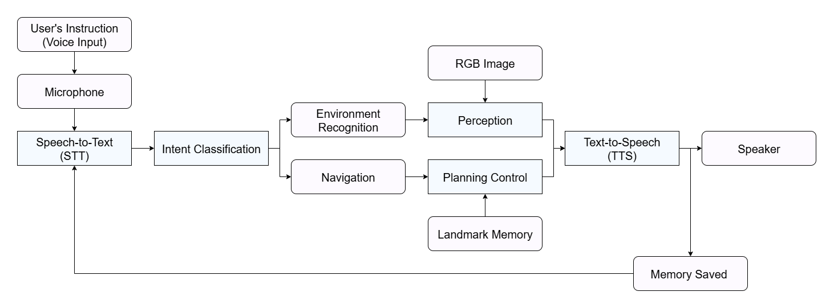
Status: Manuscript in progress.
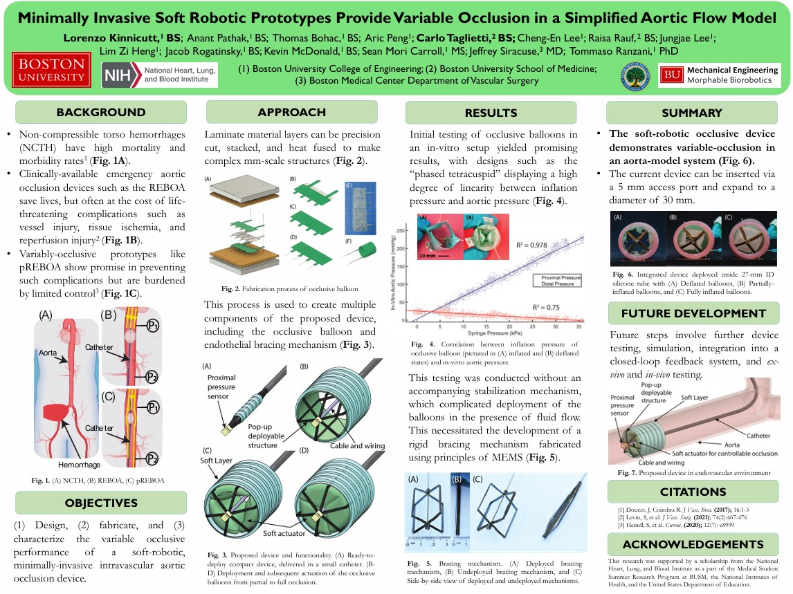
L. Kinnicutt, A. Pathak, T. Bohac, A. Peng, C. Taglietti, C.-E. Lee, R. Rauf, J. Lee, L. Z. Heng, J. Rogatinsky, K. McDonald, S. M. Carroll, J. Siracuse, and T. Ranzani.
American Heart Association Resuscitation Science Symposium (ReSS), 2022, Chicago. Presented.
A catheter-delivered soft robotic prototype for controllable aortic occlusion using inflatable soft actuators and an internal deployable brace.
Newest projects first.
September 2026 - Present
Jan 2026 - May 2026
Jan 2026 - May 2026
Course project listed in the prior portfolio. Public technical details, repository links, and results were not available in the source material.
Cloud Computing
Jan 2026 - May 2026
Jan 2026 - May 2026
Robotics course project listed in the prior portfolio. Raspberry Pi is the only verified technology detail currently available from the public source.
Raspberry Pi
Jan 2026 - May 2026
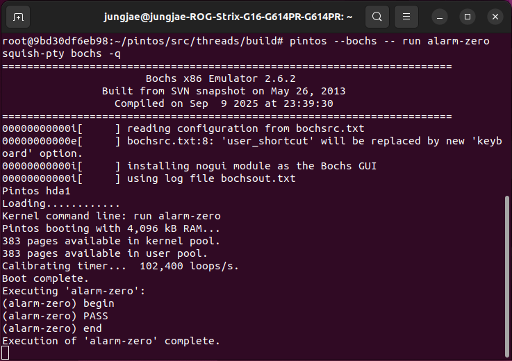
Sep 2025 - Dec 2025
Implemented operating-system components supporting threads, virtual memory, user programs, and file systems. The project emphasizes systems programming, low-level C implementation, and operating-system abstractions.
C - Operating Systems - Virtual Memory - File Systems
Sep 2025 - Dec 2025

Sep 2025 - Dec 2025
Engineered a truss bridge with structural analysis and optimization to achieve maximum load capacity.
MATLAB
Sep 2025 - Dec 2025
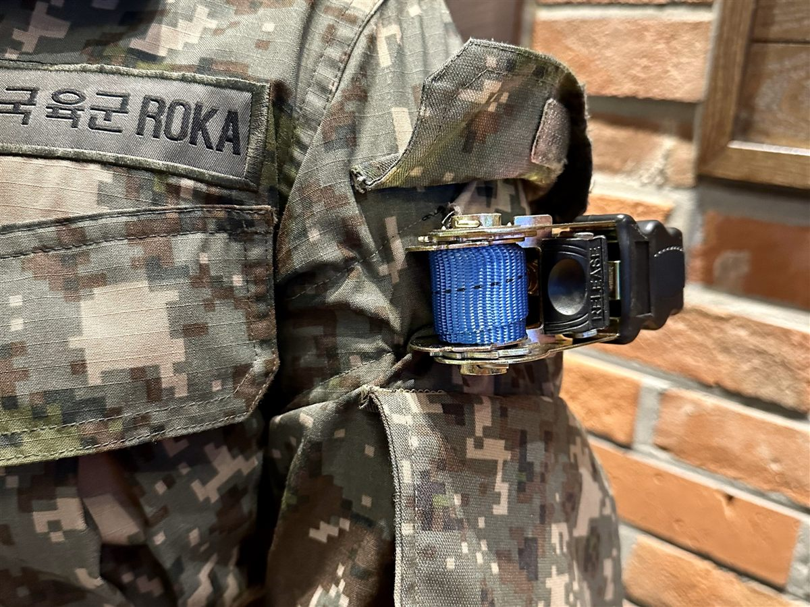
Mar 2024 - Aug 2024
Led redesign and manufacturing of combat shirts with integrated tourniquet attachments, with the prior portfolio reporting reduced application time to 5 seconds.
CAD
Mar 2024 - Aug 2024
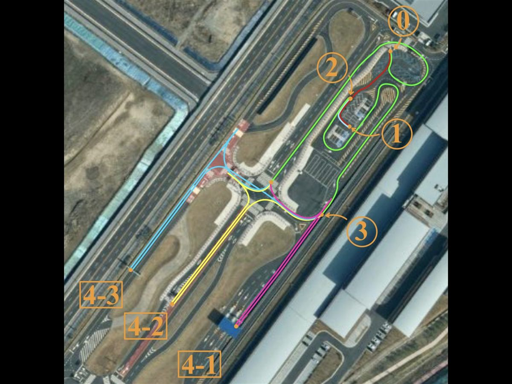
Sep 2023 - Nov 2023
Authored a technical handbook for using QGIS and MATLAB to set map checkpoints and support path implementation for autonomous driving competition objectives. The project connected map preparation, checkpoint generation, and autonomous vehicle team workflow documentation.
MATLAB - QGIS - Path Planning - Autonomous Vehicles
Sep 2023 - Nov 2023
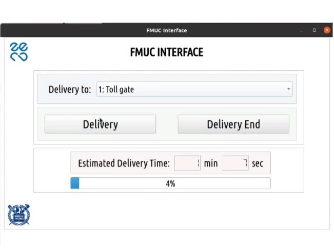
Sep 2023 - Nov 2023
Developed a GUI for remote vehicle navigation management and real-time location monitoring from a centralized control room.
GUI - Python
Sep 2023 - Nov 2023
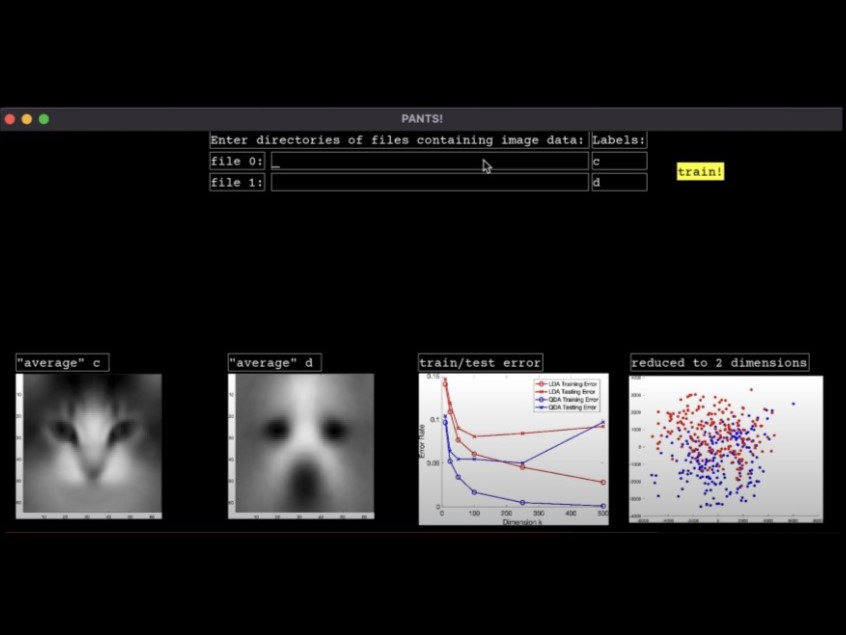
Oct 2022 - Dec 2022
Designed a user interface that accepts two labeled image directories and visualizes averaged image datasets. The project combined software engineering, image processing, and machine learning-oriented data exploration.
C++ - Python - MATLAB - Machine Learning
Oct 2022 - Dec 2022

Sep 2022 - Dec 2022
Prototyped a custom desk lamp for users with ADHD and autism, using adaptive light-spectrum adjustments, accessible switches, and flexible materials.
Arduino - CAD - Soldering
Sep 2022 - Dec 2022
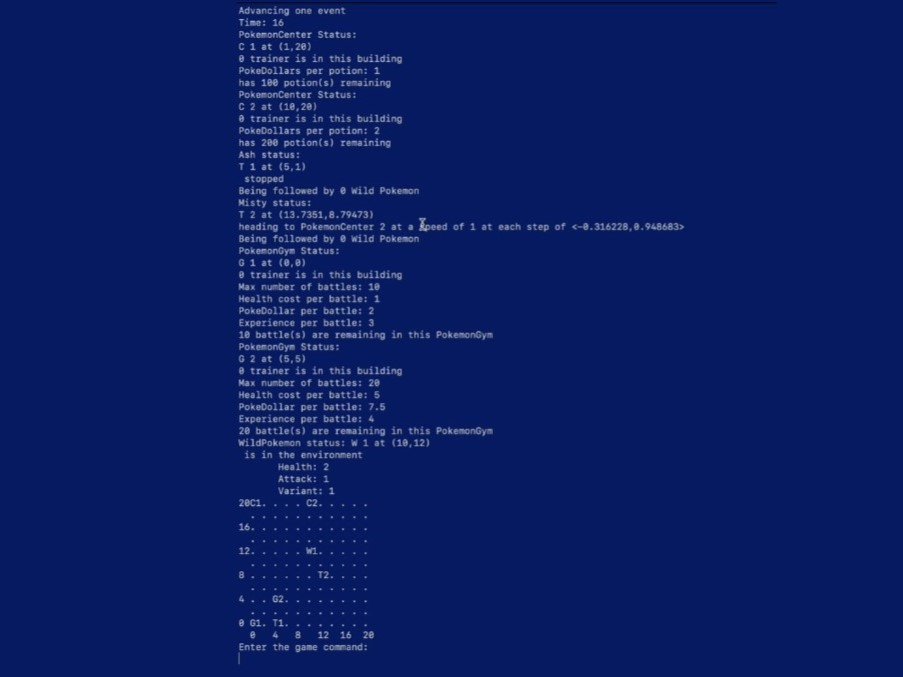
Sep 2022 - Dec 2022
Developed a 2D game with real-time interactions, command handling, and an object-oriented MVC architecture.
C++ - Python - MATLAB
Sep 2022 - Dec 2022

May 2022 - Aug 2022
Explored magnetic flux and magnetic momentum concepts while designing and testing a helicopter wing concept and rechargeable-battery idea.
Magnetics - 3D Printing
May 2022 - Aug 2022

Jan 2022 - May 2022
Conducted FMEA to identify potential failures and frequencies for vehicle safety standards and preparedness.
Analysis
Jan 2022 - May 2022
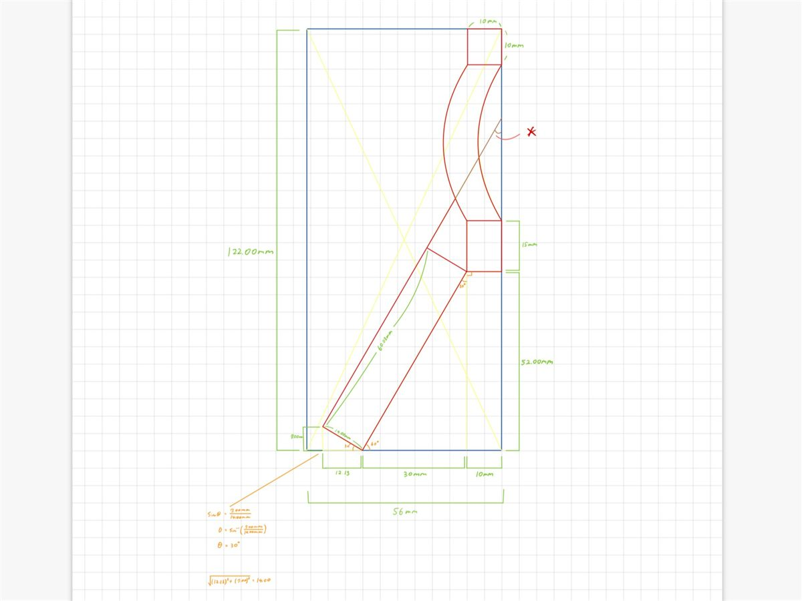
Jan 2022 - May 2022
Designed first and second SolidWorks prototypes for a robotics end effector, prioritizing functionality and durability for system compatibility.
CAD - SolidWorks
Jan 2022 - May 2022
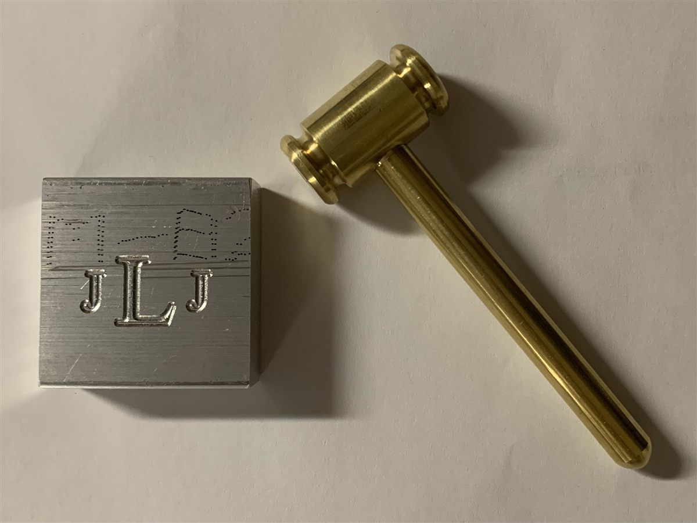
Jan 2022 - May 2022
Designed a custom gavel with a functional pen holder and an engraved name plate using manual lathes and CNC milling.
Lathes - Milling
Jan 2022 - May 2022

Jan 2022 - May 2022
Built an Arduino-based room temperature monitor with LCD output, alarm behavior, thermistor sensing, and a custom 3D-printed battery box.
MATLAB - Arduino - 3D Printing - Soldering - Circuit Design - CAD
Jan 2022 - May 2022
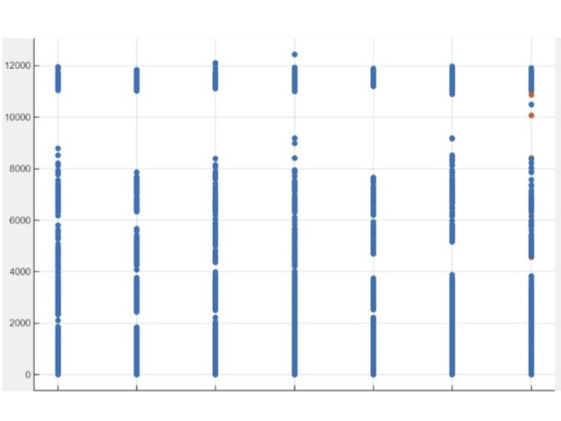
Nov 2021 - Dec 2021
Analyzed relationships between healthcare access in low-income families and causes of death using MATLAB and machine learning.
MATLAB - Machine Learning - Data Analysis
Nov 2021 - Dec 2021
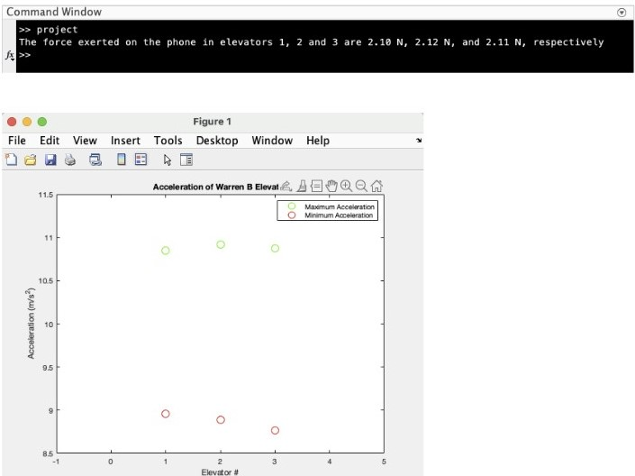
Sep 2021 - Dec 2021
Measured smartphone acceleration in three Warren Towers elevators, then used MATLAB and Newton’s second law to compare acceleration extrema and calculate forces of 2.10–2.12 N.
MATLAB - Data Analysis
Sep 2021 - Dec 2021

Sep 2021 - Jan 2022
The Tractive System Active Lamp uses an astable 555 timer and transistor switching stage to flash a 12 V beacon whenever a Formula Electric vehicle’s high-voltage tractive system is active.
Analog Circuit Design - 555 Timer - Power Electronics - PCB Design - KiCad
Sep 2021 - Jan 2022